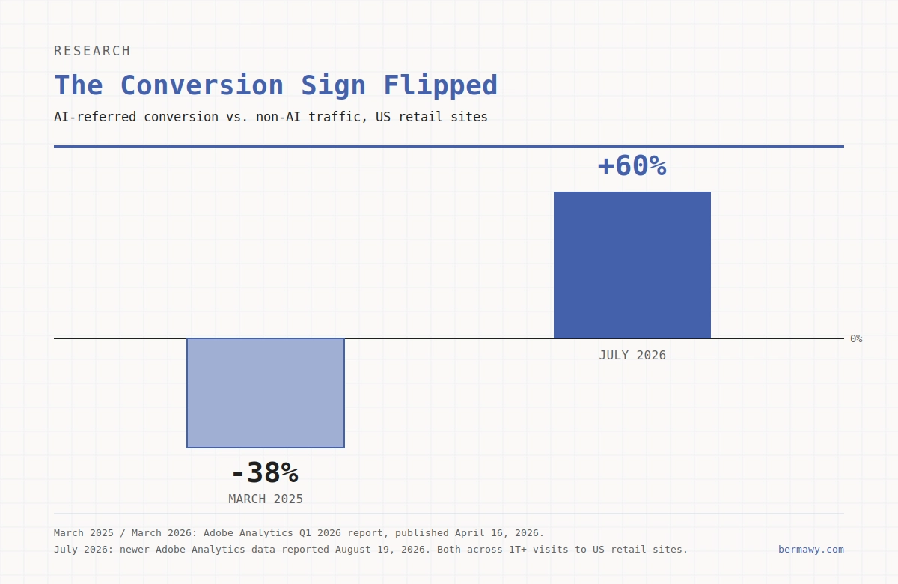
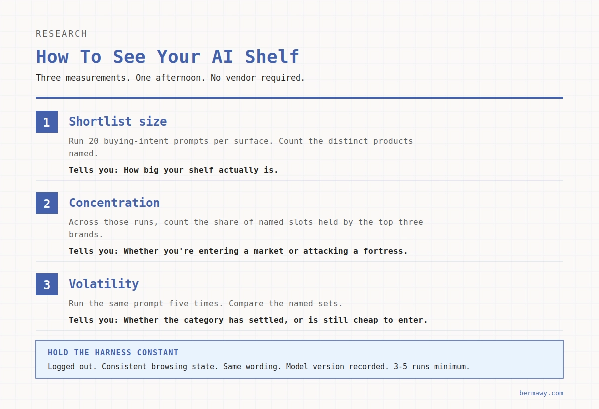

In March 2025, shoppers who landed on a US retail site from an AI assistant converted 38% worse than everyone else. By July 2026, they converted 60% better.
Same channel. Same stores. Sixteen months.
The March comparison comes from Adobe Analytics' Q1 2026 report, measured across more than a trillion visits to US retail sites. The July figures come from newer Adobe data reported in August 2026, which also showed 53% more revenue per visit and an eleventh consecutive month of AI-referred traffic outperforming everything else on conversion.
Across Adobe's aggregate retail dataset, AI-referred visitors are now among the highest-value cohorts reaching retail sites. Most teams still have no budget line for them.
Some of that advantage is likely pre-qualification: the shopper arrives after doing more of the research upstream, before the click.
This is the part worth sitting with because if more of the decision is happening before anyone reaches your site, more of your leverage sits somewhere other than your site.
The short answer. AEO for eCommerce is the work of getting your specific products named and accurately described inside an AI answer, at the moment someone is deciding what to buy. What changes when the answer engine becomes the storefront is who shapes the consideration set. You submit product data, a model narrows the options, and you don't control placement. That's closer to selling into a retailer than to running a website.
Disclosure before we go further: some of the data below comes from Goodie, a company I lead. Read the methodology and the limits accordingly.
You're a Vendor Again
Think about how it used to work when you sold into a big retailer.
You didn't control the shelf. You submitted a spec sheet, argued about assortment with a buyer, and lived with the planogram you got. Your leverage came from clean data, category performance, and whether the buyer's other sources said you were any good. Then eCommerce arrived, and you got your own storefront back — your site, your merchandising, your rules.
An answer engine gives a lot of that back to the buyer.
You submit a feed. Software decides whether you make the consideration set. You don't fully control how you're described, because OpenAI says ChatGPT may generate simplified titles and descriptions from merchant and third-party information. And where paid placement exists (for example, Amazon's Sponsored Prompts) inside the answer, that's a retail media lane forming in real time.
That's a vendor relationship. Plenty of eCommerce orgs have it filed under SEO.
What Does AEO for eCommerce Mean?
Answer engine optimization for eCommerce is about getting your products named and accurately described inside AI-generated answers, then closing the sale wherever you close it.
The distinction that matters, and that most AEO advice skips: for a SaaS brand, this is largely about whether the model describes your company well. For a store, a model can describe your brand beautifully and still recommend a competitor's SKU at the moment of purchase. Brand presence and product presence are separate outcomes with separate causes.
You'll also see this called GEO, or LLM SEO. Same job, different label. My AEO vs. GEO vs. SEO playbook makes the longer case for why. Worth one dry note: "GEO for ecommerce" collides in Google with geographic targeting, which is why many pages ranking for it open with a disclaimer that they don't mean geolocation.
AEO vs. SEO for eCommerce: What Carries Over and What Doesn't
Every vendor guide on this topic answers "does AEO replace SEO" the same way: no, it builds on it. That's true, and it's incomplete.
Here's the sharper version. Most of your SEO carries over. Crawlability, page speed, clean architecture, genuinely useful content — all of it still works, and some of it matters even more now. What doesn't carry over cleanly is ranking as a reliable proxy for being chosen.
Ranking was always a proxy. You ranked, the shopper scrolled, the shopper picked. Now a model is often narrowing the set before a results page appears, using data that often doesn't live on your domain. You can hold position three and still not enter the answer.
What AI shopping is worth to a store right now
Three numbers, all Adobe, all from the last four months.
AI-referral traffic to US retail sites grew 62% year over year in July, against 393% in Q1. The growth rate is normalizing. The quality premium isn't. AI-referred visitors are still converting better and spending more than everyone else, an eleventh straight month of it.

They tend to arrive further along. More of the research happened in the chat window. Now the counterweight from the same body of research, and it's the number I'd put on the wall.
In Adobe's April sample, retail homepages averaged 75% machine readability while product pages averaged 66%. In July, Adobe expanded the retailer sample, and the homepage average fell to 61%. Adobe attributed that change to the broader cohort rather than to a deterioration of the same sites.
Read either sample and the conclusion holds: a meaningful share of retail content isn't machine-readable, and product pages score worse than homepages. The pages that convert are the pages agents parse worst.
Demand moved. The shelf didn't. That gap is the opportunity, and it's a data problem before it's a content problem.
What Has Changed for Store Teams
1. The Unit of Competition
Search gave you a list and a scroll. An answer gives a much shorter set of names. AI shopping experiences often narrow the visible consideration set dramatically compared with a traditional results page, which compresses the value of the long tail of your catalog. A few SKUs carry the category, or none of them do. How short that set actually runs in your category is measurable, and it's the first thing I'd go find out.
2. Who Shapes the Merchandising Call
This is the vendor frame in full. You submit a feed and a model determines eligibility, then cross-checks your claims against retailers, reviews, and forums. If your own site says one thing and a retailer page says another, expect the model to summarize the less favorable version. Then the paid lane: Amazon moved Sponsored Prompts to general availability on March 25, 2026, billed through existing CPC parameters, with the prompt copy generated from your detail pages, Brand Store, and campaign data. When a platform shapes assortment and then sells placement inside it, that's retail media. We've seen this movie.
3. The Economics
AI-referred traffic is now among your best-converting cohorts, and it's the one with no clear budget owner. Most teams still treat it as a rounding error in the organic report. The right question isn't whether to invest. It's what you'd pay to acquire a visitor who converts 60% better and spends 53% more, and whether that number is bigger than the cost of fixing your feed.
4. Where the Deciding Evidence Lives
Increasingly off your site. Your product feed, your listings at every retailer carrying you, your review corpus, and the publishers and communities your category gets quoted from. In Goodie's cross-platform study of 14 product-visibility factors, published April 2026, the top five account for 58.25% of Goodie's composite weighting, and the two heaviest are structured product data completeness at 16% and price and availability freshness at 13%. These are directional weightings, not proven causal effects. Neither of the top two is a marketing asset, and both usually sit with whoever inherited the feed. Your PDP now has a second job: persuasion for the shopper, evidence for the machine. And Reddit and other third-party sources do work your own domain can't.
5. The Clock
Product data used to be a quarterly hygiene task. It's now a live input, and stale price and availability can cost you more than the impression, because it gives the system a reason to trust your data less. Platform deadlines are real too. Google shut off the Content API for Shopping on August 18, 2026 in favor of the Merchant API. If an integration still depends on it, check its status now. Google has been granting temporary extensions to projects that need more time, so find out whether that path is still open to you.
6. The Scoreboard
Brand-level AI visibility is an incomplete eCommerce scoreboard. A model can mention you warmly in every answer and recommend someone else's product every time. What a store needs is share of shelf at the SKU level, per surface, against a named competitive set. I've laid out the fuller AI search measurement framework separately, and the commerce-specific version is the gap Goodie's Agentic Commerce tooling was built to close.
One more observation from that Goodie study worth sitting with. In Goodie's Amazon recommendation sample, 87.2% of recommended products had enhanced A+ Content versus 12.8% with basic descriptions. That doesn't prove A+ Content caused the recommendation, but it makes listing completeness difficult to dismiss.
What the AI Shelf Actually Looks Like, and How to See Yours
You can't manage an assortment you've never looked at. Ask most eCommerce teams how many products get named when a shopper asks their category question, and they don't know. They know their Google rank. They've never counted the shelf.
It takes an afternoon. Three measurements, run on your own category, no vendor required.
Measure Your Shortlist Size
Take twenty prompts that map to how people actually buy in your category, the "best X for Y under $Z" shape rather than your keyword list. Run each one on the surfaces that matter to you and count the distinct products named. That number is your shelf. Everything else in this article is downstream of how big it is.
Check Concentration
Across those runs, count what share of the named slots go to the top three brands. That's share of shelf, and it's the metric that tells you whether you're entering a market or attacking a fortress. High concentration means the incumbents are already the consensus answer and you're buying your way in with evidence over quarters, not weeks. Low concentration means the category hasn't settled and the entry price is temporarily cheap.
Test for Volatility
Run the same prompt five times and compare the named sets. If they're stable, the model has a settled view of your category and a single good week of PR won't move it. If they churn, you're looking at a shelf that's still forming, and small signals still move it.

Keep the Testing Harness Consistent
Hold the harness constant, or you'll read noise as a trend.
- Logged out,
- Browsing state consistent
- Same prompt wording
- Model version recorded
- Three to five runs minimum.
Answers are non-deterministic, and a single hand-typed prompt on a Tuesday is an anecdote, not a baseline. Do this before you touch your feed, to know whether the work is worth doing and roughly what it should cost.
Who Owns This Inside Your Company
If this is a channel relationship, it doesn't belong to SEO alone.
Some of the most useful instincts here sit with the people who already run your marketplace and trade accounts. They know how to manage a buyer, chase listing compliance across accounts, argue about assortment, and fight for placement they don't control. Catalog discipline and channel management transfer directly.
But no single team owns this, and pretending otherwise is how it stalls. In practice it runs across six seats:
- Marketplace and trade for retailer parity and assortment
- Merchandising for which SKUs are worth fighting for
- Product and catalog data for feed completeness, identifiers, and freshness
- SEO and AEO for crawlability, structure, and answer coverage
- Reviews and PR for the third-party evidence models check you against
- Analytics for a scoreboard that reads at the SKU level
Then make one split explicit, because there are two jobs underneath all of that and they fail independently.
Someone owns the data: feed completeness, identifiers that reconcile across every retailer, price and availability freshness. Someone owns the evidence: PDP claims a model can check, review velocity, third-party presence. Feed-only brands tend to be eligible everywhere and named nowhere. Evidence-only brands publish good buying guides that no assistant can price accurately, because the GTIN doesn't match what the retailer has.
Audit them separately. They break for different reasons.
This is the commerce-specific version of a broader argument I've made about building a marketing org for agents.
What I'd Stop Doing
- Stop optimizing product titles only for keywords. Canonical product identity, attributes, clarity, and consistency now matter alongside search demand, and they matter across Google, Amazon, your feeds, and every retailer carrying you.
- Stop reporting brand-level AI visibility to a commerce team on its own. It doesn't tell them which SKU lost the shelf, which is the question they can act on.
- Stop treating the feed as a paid-media artifact. It's now an entry point to organic discovery on multiple surfaces. If the only person who touches it reports to performance marketing, your organic AI product visibility has no owner.
- Stop publishing buying guides while the feed is stale. Eligible but unquotable and invisible, tend to produce the same revenue.
- Stop maintaining a blanket AI-crawler block. It's among the most expensive configuration errors in the channel and one of the hardest to detect. The per-bot decisions are in the AI shopping guide.
- Stop waiting for in-chat checkout to settle. Discovery is the channel that's working now. Checkout is still moving. Get named first.
Instead, work the surfaces one at a time. I keep a current playbook for how each AI platform chooses products, and a rundown of the tools that can show you the shelf if you can't see it yet.
The uncomfortable part of being a vendor again is that the buyer doesn't care how good your brand deck is. The useful part is that you already know how to win one over. Clean data, honest claims, and a category performance story someone else can verify.
Go find out whether your top twenty SKUs still say the same thing everywhere they're listed. Most don't.